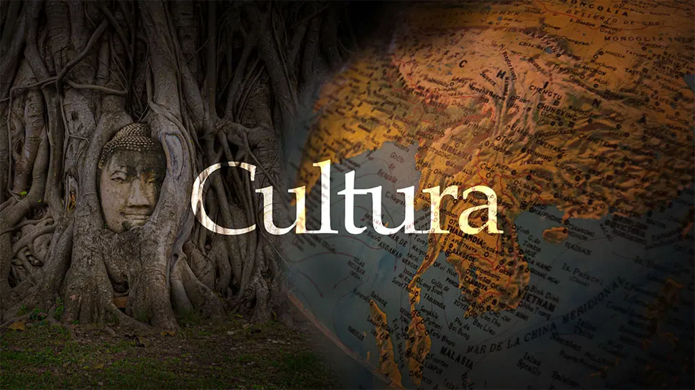

La cultura representa el conjunto de conocimientos, costumbres y expresiones artísticas que definen a una sociedad. A través de la cultura, las personas transmiten valores, tradiciones y modos de vida de generación en generación.
El desarrollo cultural fomenta la creatividad, la identidad y la diversidad, siendo un pilar fundamental para el progreso de los pueblos.
El deporte es una actividad física que contribuye al bienestar y a la salud de las personas. Además, promueve valores como el trabajo en equipo, el esfuerzo y la disciplina.
Existen múltiples disciplinas deportivas que permiten el desarrollo físico y mental, y fomentan la convivencia y el respeto entre los participantes.